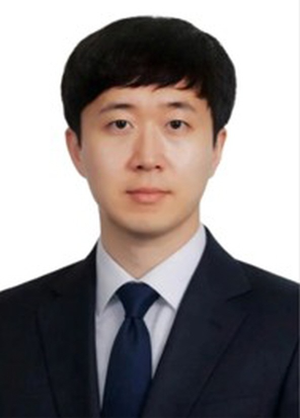

KAIST에서 산소환원 촉매의 표면 설계를 주제로 박사학위를 받고, 한국에너지기술연구원(KIER)과 미국 국립재생에너지연구소(NREL)에서 수전해 촉매를 연구했습니다. 2026년부터 국립금오공과대학교에서 전산재료과학연구실을 이끌고 있습니다. He received his Ph.D. from KAIST on surface design of oxygen-reduction catalysts, followed by postdoctoral research on water-electrolysis catalysts at KIER and NREL. Since 2026, he has led the Computational Materials Science Laboratory at Kumoh National Institute of Technology.